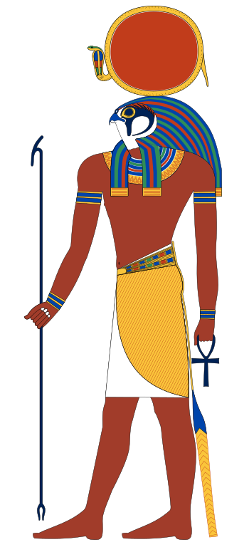
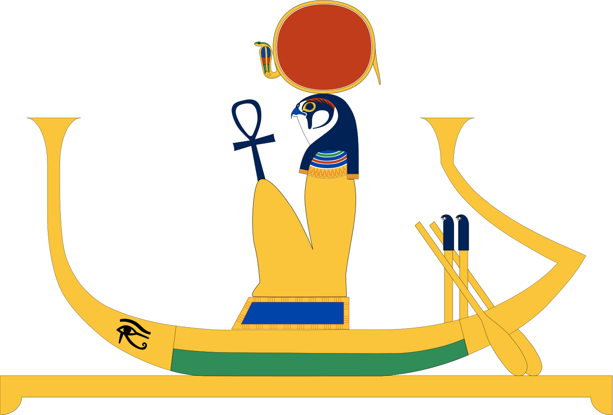
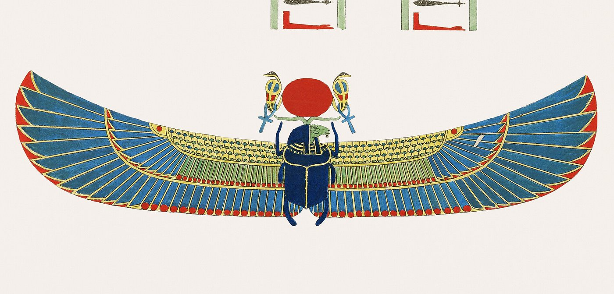
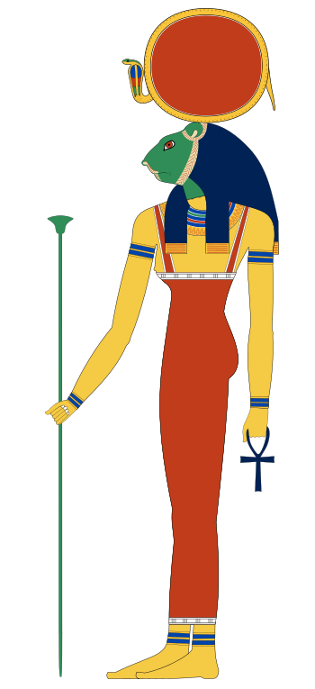
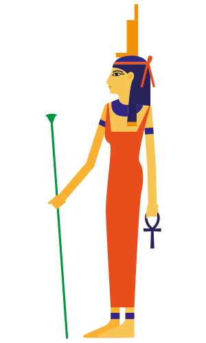

The sun god
For the Egyptians, the sun was not a mere star: it was Re, the god whose daily course sustained life on earth. Re changes his appearance as the hours pass, just like the sun itself. In the morning he is Khepri, the scarab pushing the sun disc before him; at noon he is Re in all his might; in the evening he becomes Atum, the old creator who sets in the west.
He is most often shown as a falcon-headed man crowned with the sun disc encircled by a cobra: he then bears the name Re-Horakhty, “Re, Horus of the two horizons”. United with Atum under the name Re-Atum, he is worshipped as the creator and king of the gods. In the New Kingdom, he is also joined with Amun, the great god of Thebes, under the name Amun-Re. Since the Old Kingdom, every pharaoh has borne the title “son of Re” and must, at his death, join his father in the sky.

The journey of the day
For the Egyptians, the sky was a heavenly river, which Re travels aboard his bark. Every morning he leaves the eastern horizon and crosses the sky for twelve hours, from dawn to dusk, as far as the western horizon. As the day goes by, he ages like a human being: a child at dawn, an adult in the prime of life at noon, an old man at sunset.

The journey of the night
In the evening, Re does not vanish: he enters the Duat, the underworld of the dead, which he must cross during the twelve hours of the night to be reborn in the east. This perilous journey is described hour by hour in books carved on the walls of the royal tombs, such as the Amduat (“what is in the Duat”). Meanwhile, in the sky, it is the moon of Thoth that lights the night in place of the sun.
Re is not alone in his bark. He is accompanied by a divine crew: Heka, magic, Sia, knowledge, Hu, creative speech, and other gods depending on the version, such as Wepwawet, “the opener of the ways”. The god himself has taken on a night form: a ram-headed man, representing his soul gone down into the world of the dead.
First to third hour. Greeted by baboons singing his praises, the bark sets out on the abundant waters of the Duat. There Re hands out fields and food to the blessed dead, who briefly see the light again as he passes.
Fourth and fifth hours. The bark reaches the realm of Sokar, a sandy desert crossed by zigzag paths. There is no more water: the bark turns into a serpent and must be hauled by gods. At the heart of this region, in a cave guarded by serpents, lies hidden the secret body of Sokar.
Sixth hour. This is the deepest and most mysterious moment of the night. The soul of Re unites with the body of Osiris, the dead god: from this union comes the strength that will allow the sun to be reborn. The benevolent serpent Mehen coils around the god to protect him in this moment of weakness.
Seventh hour. Apophis, the giant serpent of chaos, lies in wait for the bark. He has drunk the water of the river and stretched out on a sandbank to stop the sun. But the magic of Isis, standing at the prow, drains his strength, and the scorpion goddess Selkis pins him down with other gods who pierce him with knives. According to other texts, it is Seth, the strongest of the gods, who drives Apophis back with his spear from the front of the bark. On the days when the serpent wins, the sun grows dark: this is how the Egyptians could explain eclipses.

Eighth hour. The bark passes caverns where the dead are sleeping. At the call of Re, they wake and receive new clothes, then fall silent again as the bark moves away.
Ninth to eleventh hour. The divine rowers steer the bark towards the east. Re has the enemies of the sun and of Osiris punished, hurled into pits of fire, while the drowned receive a burial and a new life. On the horizon, the birth of the day is being prepared.
Twelfth hour. The gods pull the bark through the body of a huge serpent, entering by its tail and coming out through its mouth. Those who went in old come out young. Re emerges in the form of the scarab Khepri, and Shu lifts him up into the eastern sky: the sun rises, and a new day begins.

The destruction of humankind
In the beginning, Re himself ruled over gods and humans. But he grew old: his bones turned to silver, his flesh to gold and his hair to lapis lazuli. Seeing their king weakened, humans plotted against him. Re then called together the council of the gods, who advised him to send his Eye to punish the rebels. The Eye of Re came down to earth in the form of the goddess Hathor, who changed into Sekhmet, a raging lioness, and began to slaughter humankind.
The carnage was such that Re, moved to pity, wanted to save the rest of humanity. But Sekhmet, drunk on blood, could no longer be stopped. Re resorted to a trick: he had seven thousand jars of beer brewed and dyed red with ochre to give it the colour of blood. During the night, the beer was poured over the fields. In the morning, Sekhmet saw what she took for a sea of blood and drank it greedily. Drunk, she fell asleep and forgot her anger: when she woke, she had become the gentle Hathor again.
Weary of governing humans, Re decided to leave the earth. He climbed onto the back of Nut, changed into a heavenly cow, and rose with her to form the sky, held up by Shu. Since then, the gods have ruled the world from the sky, and it falls to the pharaoh to reign over humans.

The secret name of Re
Every god had many names, but Re kept one hidden from all, the source of his power: whoever knew it would have power over him. Isis, the most skilful of magicians, wanted to learn it. Re, now old, let his saliva drip onto the ground. Isis gathered it, mixed it with earth and shaped it into a serpent, which she laid on the path the god took every day.
The serpent bit Re, and a burning poison spread through his body. No god could cure him. Isis then came forward: she would save him, she said, if he revealed his true name to her. Re tried to deceive her by listing his titles: “I am Khepri in the morning, Re at noon and Atum in the evening.” But the poison did not retreat. At the end of his strength, Re agreed to pass his secret name into the heart of Isis, on condition that she entrust it only to her son Horus. Isis then spoke the spell that drove out the poison, and earned her title of “great of magic”.
